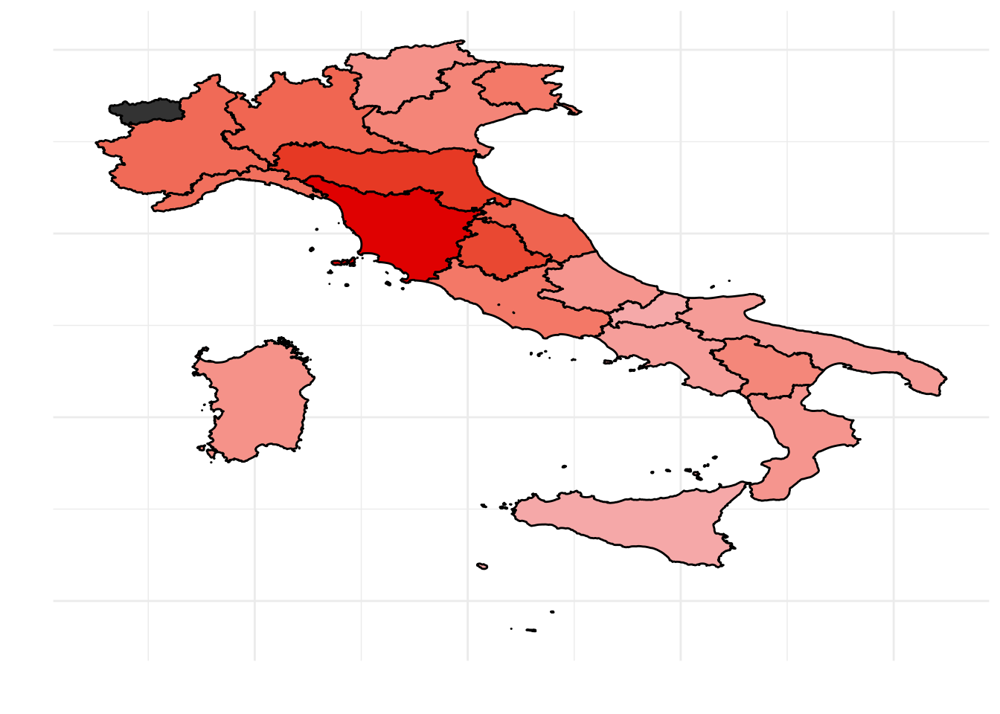

Italian elections results
In this article I investigate the performance of Italian parties in the 2018 political elections. In particular I would like to focus on the left wing party (democratic party) that during the 2018 political elections seems to have undergone a severe decline.
Data Preparation
The data I will be using was downloaded from the data section of the website of the Italian Interior Ministry.
I then translated into English the variables’ names and the so modified daaset is now available on my github repo emanuelaf/emanuelaf.github.io.
Import data from online github repo
First of all we need to load the packages we’ll be using throughout the analysis:
require(tidyverse)
require(devtools)
require(readxl)
require(ggrepel)Then we can download the data. We need to import two files:
- camera_2018_italy.csv that contains the number of votes each party received in each electoral district
- macro-aree that contains information on the macroarea each Italian region belongs to
The first file contains the actual information on the number of votes to each party, while the second file contains additional info that may help us better understand the “geography” of the votes.
Files can be downloaded straight from github and parsed to R as follows:
urlfile <- "https://raw.githubusercontent.com/emanuelaf/emanuelaf.github.io/master/camera_2018_italy.csv"
elections <- read_csv(urlfile)
urlfile2 <- "https://raw.githubusercontent.com/emanuelaf/emanuelaf.github.io/master/macro-area"
macroarea <- read_csv(urlfile2)Data manipulation
The longest part in the data workflow is to get the data the way we want it.
As R is case sensitive, the first thing I usually do is to set the whole dataset to lower cases. Let us do this into two steps, first making all the variables lower case and then transforming the variales’ names themselves to lower cases:
elections <- elections %>%
mutate_all(funs(tolower(.)))
colnames(elections) <- tolower(colnames(elections))The dataset (with its first few columns) looks like this:
| electoral_district | plurinominal | uninominal | province | municipality | name | surname | party | electors |
|---|---|---|---|---|---|---|---|---|
| piemonte 1 | piemonte 1 - 01 | 06 collegno | torino | alpignano | celeste | d’arrando | movimento 5 stelle | 13746 |
| piemonte 1 | piemonte 1 - 01 | 06 collegno | torino | alpignano | sara | zambaia | lega | 13746 |
| piemonte 1 | piemonte 1 - 01 | 06 collegno | torino | alpignano | sara | zambaia | forza italia | 13746 |
| piemonte 1 | piemonte 1 - 01 | 06 collegno | torino | alpignano | sara | zambaia | fratelli d’italia con giorgia meloni | 13746 |
| piemonte 1 | piemonte 1 - 01 | 06 collegno | torino | alpignano | sara | zambaia | noi con l’italia - udc | 13746 |
| piemonte 1 | piemonte 1 - 01 | 06 collegno | torino | alpignano | umberto | d’ottavio | partito democratico | 13746 |
with 20 variables collected on the 133068 Italian electoral districts.
We need some more data manipulation in order to have data which is easier to treat. In fact instead of looking at electoral district level data, we may want to aggragate data at region level and calculate the percentage of votes received by each party.
Looking at our dataset, aggregating by region is possible. In fact the column electoral_district, contains the name of the discrict in which votes were counted. Each district is called by the region name and a number. We can manipulate the column containing the district name in order to get the region name, so that we can then aggregate by region and come up with region level information. The following code does so:
elections_region <- elections %>%
separate(electoral_district, c("region", "other"), " ") %>%
group_by(region, party) %>%
summarise(votes = sum(as.numeric(numvotes))) %>%
mutate(perc_votes = round(votes/sum(votes)*100, 2)) %>%
ungroup() %>%
left_join(macroarea)And our final dataset looks like this:
| region | party | votes | perc_votes | macroarea |
|---|---|---|---|---|
| abruzzo | 10 volte meglio | 1186 | 0.16 | centre |
| abruzzo | casapound italia | 7393 | 1.01 | centre |
| abruzzo | civica popolare lorenzin | 6938 | 0.95 | centre |
| abruzzo | +europa | 13754 | 1.89 | centre |
| abruzzo | forza italia | 107573 | 14.75 | centre |
| abruzzo | fratelli d’italia con giorgia meloni | 36629 | 5.02 | centre |
Data analysis
Let us know start answering questions on the left wing party which seems to have undergone a decline in the latest elections.
How many votes for the Democratic Party?
The Democratic Party that “won” the 2013 elections, but that did not do well in 2018. The percentage of votes the Democratic Party got in each region is the following:
tab1 <- elections_region %>%
filter(party == "partito democratico") %>%
select(-party) %>%
arrange(desc(perc_votes)) %>%
ungroup()
tab1_b <- tab1
tab1_b$region <- reorder(tab1_b$region, tab1_b$perc_votes)
ggplot(tab1_b) +
geom_bar(aes(x = region, y = perc_votes, fill = macroarea),
stat = "identity", col = "black", alpha = 0.5) +
scale_y_continuous(labels = function(perc_votes) paste0(perc_votes, "%")) +
coord_flip() +
theme_bw() +
theme(legend.position="bottom", axis.text.x=element_text(angle=45, hjust=1))
It seems that the democratic party is strong in central Italy, a bit less strong in the north of Italy, and definately not that appealing in Southern Italy. Notice that Tuscany, followed by some other central regions, has always been a fairly “left wing” region and it is still the region in which the democratic party is strongest. However in the previous elections the democratic party had received more votes.
Those that did not vote for the democratic party, did they vote for another left wing party?
In other words, I would like to find out whether there are regions in which both the percentage of votes to the democratic party and the percentage of votes to another left wing party are high. By doing so I should identify left-wing regions where both percentages are high and right wing regions in which both percentage are low. Or regions in which one of the two party has attracted most votes leaving the other left wing party with none.
The second biggest left wing party is called “liberi e uguali”:
tab2 <- elections_region %>%
filter(party == "liberi e uguali") %>%
select(-party) %>%
ungroup()
tab2 <- left_join(tab1, tab2, by = "region", suffix = c(".party1", ".party2"))
ggplot(data = tab2, aes(x = perc_votes.party1, y = perc_votes.party2)) +
geom_point(aes(col = macroarea.party1), size = 1) +
labs(y = "Other left wing party", x = "Democratic Party") +
scale_color_discrete(name="Macroarea") +
geom_label_repel(aes(label = region, col = macroarea.party1), size = 3, show_guide=F) +
theme_bw() +
theme(legend.position="bottom") 
The plot returns what we expected. Central Italian regions such as Tuscany and Emilia-Romagna are well known for being left wing regions and in fact both the Democratic Party and the second largest left wing party got quite a good percentage of votes, while other regions, such as Molise and Sicily, both left parties did not go well. Basilicata seems to play an exception and the other left wing party seems to have attracted the left wing voters.
Mapping the votes
Last let us visualise on a map what is happening to the Italian peninsula. Using the development version of the package mapIT available on github, we plot the data.
There are different ways of creating maps in R. In this case, each region is a polygon identified by the region name. If we want to plot data on the map, we need to give R a dataset with region values identified by the region name. The mapIT() function will match each regional value with its polygon and colour the polygon according to it.
Hence we better make sure that the regions’ id in our dataset is the same as that recognised by the mapIT() function. The mapIT() function was developed so that blanks between words and alphanumeric characters are ignored. So, for example the region called “Trentino-Alto Adige” is correctly recognised even if it’s spelled ‘Trentino Alto Adige’ or ‘TrentinoAltoAdige’.
However, some of our region names were truncated due to the procedure we adopted for extracting the names from the electoral district variable. The following code lines fix this:
And here is the percentage of votes obtained by the Democratic Party on the Italian map:
require(mapIT)
mapIT(perc_votes, region, data = data.frame(tab1),
graphPar = list(low = "#F5A9A9", high = "#DF0101",
show_guide = "Percentage of votes"))
Conclusion
In this brief article we manipulated the dataset on Italian political elections, and printed plots and tables in order to investigate what happened to the democratic party during the latest elections.
Note that using the same code, one could choose to focus on a different party and analyse its performance. Also, note that this is an official dataset, hence it comes equal every election. Once the variable names are translated into English, the same code still applies. Last, note that this article may easily be transformed into an interactive analysis where users choose one party to focus on and to switch to different years, after additional years’ elections data is downloaded.